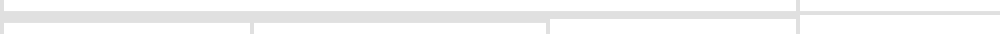
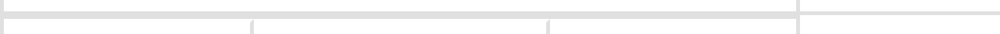
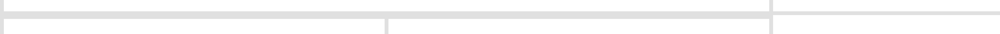
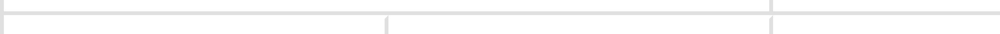

Слева — CSS с базовой ветки feature/scheduler-multilevel-grouping/main, справа — с фиксом.
JS-бандл в обоих кадрах одинаковый, отличается только тема. Смотреть на верхнюю кромку панели групп.
До фикса над первой группой рисовался разделитель групп (border-top у первого
.dx-scheduler-group-header) — хотя никакой границы между группами там нет: это верх панели.
Он ложился поверх собственной рамки панели (work-space-vertical-group-table) и внешней линии
виджета (sidebar-scrollable или header-panel-empty-cell). Фикс убирает именно
этот лишний разделитель — на всех уровнях вложенности и во всех видах.
Рамка при этом остаётся на месте и лишь теряет цвет (border-top-color: transparent):
если убрать её совсем, ячейка становится на 1px ниже и первая полоса панели перестаёт совпадать
с первой строкой таблицы дат — это ловит QUnit-тест «Height of dx-scheduler-group-row
should be equal with height of dx-scheduler-date-table-row».
В таймлайнах у панели нет собственной рамки, поэтому там кромка становится ровно 1px. В day/week/month остаются две линии: внешняя линия виджета и собственная рамка панели — она несущая (без неё, например, при включённой all-day панели и выключенном cross-scrolling панель остаётся вообще без верхней кромки), и её выравнивание с таблицей дат — отдельный вопрос, в этот фикс не входящий.
Разница — 1 пиксель, поэтому ниже вырезана и увеличена сама кромка. Слева от вертикальной черты — панель групп и панель времени, справа — таблица дат.




| верх панели, day/week/month | верх панели, timeline | граница между группами | |
|---|---|---|---|
| до фикса | 3 линии | 2 линии | 1px |
| после фикса | 2 линии | 1 линия | 1px |
| таблица дат (не менялась) | 1px | 1px | 3px (2px + 1px) |
Разную толщину на границе групп (последний столбец) фикс не трогает: это досуществующее расхождение, оно одинаково видно и при одном плоском ресурсе, и выбор целевой толщины — решение дизайна.